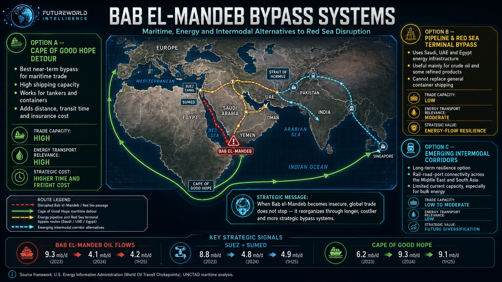

Geopolitics Intelligence #009
Red Sea Chokepoint Leverage — Bab el-Mandeb, Hormuz and the Repricing of Global Trade Risk
A policy-level FutureWorld Intelligence report on Bab el-Mandeb, Hormuz, Red Sea disruption, shipping insurance, bypass routes, supply-chain inflation and the geoeconomics of unreliable infrastructure.
Start the ReportBack to Geopolitics PageRoute-risk and freight-friction chokepoint.
Volume-risk and energy-supply chokepoint.
Insurance repricing, rerouting and delays.
Modern power can make infrastructure unreliable.

Visual brief: FutureWorld Intelligence map of Bab el-Mandeb bypass systems, showing the Cape of Good Hope detour, pipeline and Red Sea terminal bypasses, emerging intermodal corridors, and key strategic signals from EIA and UNCTAD frameworks.
Executive Brief
The Bab el-Mandeb Strait is not merely a narrow maritime passage at the southern entrance of the Red Sea. It is a geoeconomic pressure point where maritime security, energy flows, shipping insurance, supply-chain inflation, naval deterrence and proxy conflict intersect.
Recent arguments about a possible closure of Bab el-Mandeb correctly identify the strategic importance of the Red Sea corridor. But the more serious policy conclusion is subtler: Iran-aligned pressure in Yemen does not need to produce a full physical closure to generate global economic consequences. The credible threat of attack, misidentification, escalation or selective targeting can be enough to reprice maritime risk, redirect shipping around Africa, raise insurance premiums, lengthen delivery cycles and push costs into European, Asian and Global South markets.
The leverage is therefore not only military. It is actuarial, logistical and psychological.
Bab el-Mandeb and Hormuz should also not be treated as identical chokepoints. They belong to different strategic categories. Bab el-Mandeb has a maritime back door: the Cape of Good Hope. That detour is costly, slow and inefficient, but it allows ships and energy cargoes to keep moving. A Bab el-Mandeb disruption therefore behaves primarily as a friction shock: it bends the freight curve, raises insurance costs, extends shipping time and strains just-in-time logistics.
Hormuz is different. Hormuz has no equivalent maritime bypass for most Gulf oil and LNG. If Hormuz is closed or heavily disrupted, barrels and LNG cargoes do not simply reroute at scale; large volumes are removed from the market or constrained by limited pipeline alternatives. Hormuz therefore behaves as a volume shock. It does not merely tax the route; it threatens the availability of supply.
This distinction is central to the policy analysis. Bab el-Mandeb is a tolling weapon. Hormuz is a supply-removal weapon. If Iran can influence both, the combined leverage is not additive in a simple way. Bab el-Mandeb imposes recurring economic friction while Hormuz remains the higher-order energy escalation reserve.
For FutureWorld Intelligence, the core argument is this:
The Red Sea crisis shows that modern economic power no longer comes only from controlling territory, fleets or oilfields. It increasingly comes from the ability to impose risk premiums on the global systems that others depend on.
Evidence Dashboard: The Strategic Baseline
| System | Evidence Anchor | Policy Meaning |
|---|---|---|
| Red Sea / Suez trade corridor | Around 12% of global trade, 30% of container traffic and about $1 trillion in goods move through the Red Sea route. [S1] | The route is a global trade artery, not a regional passage. |
| Bab el-Mandeb oil flows | Oil flows through Bab el-Mandeb fell from 9.3 mb/d in 2023 to 4.1 mb/d in 2024, with 4.2 mb/d in 1H25. [S2] | The disruption has already redirected energy flows even without permanent closure. |
| Suez / SUMED flows | Suez and SUMED flows fell from 8.8 mb/d in 2023 to 4.8 mb/d in 2024. [S2] | Red Sea instability weakens the entire Suez energy corridor. |
| Cape of Good Hope detour | Cape flows rose from 6.2 mb/d in 2023 to 9.3 mb/d in 2024. [S2] | The bypass works, but it transfers cost into time, fuel, freight and insurance. |
| Insurance transmission | War-risk insurance for Red Sea transit added hundreds of thousands of dollars per voyage during the Houthi campaign. [S3] | Risk markets transmit coercion faster than physical shortages. |
| Route duration | Rerouting around the Cape of Good Hope can add up to roughly two weeks to journeys. [S1] | Delays become supply-chain costs and inventory stress. |
| Global maritime dependence | More than 80% of global imports and exports by volume move by sea. [S4] | Maritime disruption is a systemic economic risk. |
| Hormuz distinction | Hormuz handles around one-fifth of global oil consumption; alternatives cannot replace the full maritime volume. [S5] | Hormuz is a volume-risk chokepoint, not merely a route-risk chokepoint. |
FutureWorld Analytical Method: G-D-T-L-S
FutureWorld Intelligence applies the G-D-T-L-S formula to separate strategic signal from headline noise.
G — Geography:
Bab el-Mandeb links the Gulf of Aden, Red Sea, Suez Canal, SUMED pipeline and Mediterranean. Hormuz links the Persian Gulf to the Gulf of Oman and global energy markets. The first is a Red Sea-Suez route problem; the second is a Gulf energy-exit problem.
D — Data:
The key data are oil flows, container volumes, insurance premiums, shipping distances, freight rates, naval deployments, port congestion, pipeline capacities and fuel-price transmission.
T — Theory:
The report uses sea-power theory, geoeconomics, deterrence theory, proxy warfare, systems-risk theory and supply-chain resilience analysis.
L — Law:
The relevant legal frameworks include freedom of navigation, transit passage, maritime insurance contracts, sanctions regimes, shipping regulation, war-risk clauses and the legal limits of blockade or coercive interdiction.
S — Scenario:
The report considers four pathways: managed risk, selective disruption, prolonged Red Sea degradation and dual-chokepoint escalation involving both Bab el-Mandeb and Hormuz.
1. The Policy Problem: Closure Is the Wrong Starting Point
Most public debate asks whether Bab el-Mandeb can be “closed.” That is not the most useful policy question.
The better question is: how much risk must be introduced before commercial actors behave as if the corridor is no longer reliable?
In maritime trade, the market does not wait for formal closure. Shipowners, insurers, charterers, cargo owners and naval risk advisers respond to probability, not certainty. If the expected cost of transit rises above the cost of rerouting, ships move around Africa. If insurance premiums rise sharply, cargo prices adjust. If delivery windows become unreliable, importers change inventory policy. If a few vessels are hit, the corridor’s risk status can change even while the strait remains technically open.
This is the key asymmetry. A non-state or proxy actor does not need to defeat a navy to impose costs on the global economy. It only needs to make the route commercially irrational for enough vessels.
The Bab el-Mandeb crisis is therefore best understood as a risk-pricing crisis, not only a navigation crisis.
2. Bab el-Mandeb as a Friction Shock
Bab el-Mandeb is a narrow passage between Yemen and the Horn of Africa. It connects the Gulf of Aden to the Red Sea and, through the Suez Canal, to the Mediterranean and Europe. Its economic importance comes from its position in the Asia-Europe trade route and in Persian Gulf energy flows that move toward Suez, SUMED and European markets.
A disruption at Bab el-Mandeb does not necessarily stop global trade. Instead, it forces trade to reorganize.
The main alternative is the Cape of Good Hope route. This route avoids the Red Sea and Suez system by sending vessels around southern Africa. It is operationally viable for containers and many tankers, but it imposes additional distance, fuel consumption, crew time, equipment imbalance, port-schedule disruption, insurance costs and delayed delivery.
This is why Bab el-Mandeb is best understood as a friction chokepoint. It raises the cost of movement rather than instantly removing all movement.
The friction matters because modern supply chains were designed around efficiency, not redundancy. Just-in-time logistics assumed that chokepoint disruption would remain a temporary tail risk. The Red Sea crisis suggests that chokepoint disruption may now become a recurring operating condition. That changes the economics of inventory, shipping contracts, insurance, port capacity and sourcing strategies.
3. Hormuz as a Volume Shock
The Strait of Hormuz is a different category of chokepoint.
Hormuz is the maritime exit for much of the Persian Gulf’s oil and LNG. If Bab el-Mandeb is blocked, ships can still sail around Africa. If Hormuz is heavily disrupted, many Gulf barrels and LNG cargoes have no equivalent maritime bypass. Saudi Arabia and the UAE possess pipeline alternatives, but these cannot fully replace the maritime volume of Hormuz, and not all Gulf exporters have comparable options.
This creates a different leverage profile.
Bab el-Mandeb imposes a toll on trade. Hormuz threatens the availability of supply.
Bab el-Mandeb pushes up freight, insurance and transit time. Hormuz can push up crude oil, refined products, LNG and macroeconomic inflation through physical scarcity or credible scarcity.
This distinction is essential. The two chokepoints should not be analyzed as one simple Iranian lever. They are two instruments with different pressure mechanics:
- Bab el-Mandeb: route-risk leverage.
- Hormuz: supply-volume leverage.
- Together: systemic coercion through both freight friction and energy scarcity.
The most dangerous scenario is not only closure of Bab el-Mandeb. It is a layered crisis in which the Red Sea remains degraded while Hormuz becomes unstable. In that case, global markets face both rerouting costs and supply uncertainty.
4. The Insurance Channel: Where Coercion Becomes Price
The critics are right to emphasize insurance. The first transmission mechanism of Red Sea instability is often not physical shortage. It is war-risk repricing.
Insurance markets act as the nervous system of maritime commerce. They transform geopolitical risk into monetary cost. When a route is designated high-risk, premiums rise. When premiums rise, carriers decide whether to pass through, reroute, apply surcharges or suspend services. These decisions then affect freight rates, delivery times and consumer prices.
This is why a small actor can generate disproportionate economic effects. The cost of launching drones, missiles or threatening navigation may be far lower than the cost imposed on global shipping networks. The asymmetry lies not in direct military comparison, but in the cost-exchange ratio.
This is also why deterrence is difficult. Even if naval forces intercept many attacks, the residual probability of a successful strike may still be enough to alter commercial behavior. Shipping firms are not required to prove that a route is impossible. They only need to decide that it is not commercially tolerable.
In this sense, the Red Sea crisis is a case study in actuarial coercion: the use of credible threat to raise the risk premium paid by others.
5. Bypass Routes: Real but Incomplete
Three bypass options dominate the debate.
Option A — Cape of Good Hope Maritime Detour
The Cape route is the most realistic short-term substitute for the Red Sea-Suez route. It can carry containers, tankers and bulk shipping. It is scalable in a physical sense because the ocean route is open. But it is not a cost-neutral substitute.
The Cape route adds time, distance, fuel consumption, emissions, equipment strain and port-schedule disruption. It also reduces the effective capacity of shipping fleets because vessels spend longer at sea. A ship that takes longer to complete a round trip is temporarily removed from the available service cycle.
The Cape route therefore preserves movement but degrades efficiency.
Option B — Pipeline and Terminal Bypass
Pipeline options are relevant mainly to crude oil and some refined products, not general container trade. SUMED, Saudi Red Sea infrastructure and UAE routes can help reroute selected energy flows, but they cannot replace container shipping through Suez, nor can they fully absorb all Gulf energy exposure under a wider regional crisis.
Pipelines reduce chokepoint exposure, but they introduce other vulnerabilities: fixed infrastructure, sabotage risk, political access, terminal capacity, loading constraints and commodity specificity.
Pipelines are resilience tools. They are not universal substitutes for maritime trade.
Option C — Intermodal Corridors
Intermodal corridors such as India-Middle East-Europe connectivity concepts, Gulf-to-Mediterranean routes, rail-road-port systems and future logistics corridors may reduce exposure over the long term. However, these are not immediate substitutes for the Red Sea system.
A corridor is not real because it appears on a diplomatic map. It becomes real only when ports, railways, roads, customs systems, financing, security, digital tracking, legal agreements and commercial demand align.
Most proposed intermodal systems remain low-capacity compared with maritime trade. They may be valuable for high-value goods, strategic redundancy and political connectivity, but they cannot replace bulk container, crude, LNG or commodity flows at global scale in the near term.
6. Iran’s Leverage: Powerful but Constrained
Iran’s strategic position is often overstated in one direction and understated in another.
It is overstated when analysts imply that Iran can costlessly shut global trade at will. A prolonged disruption would also damage Iran’s partners, customers and regional relationships. China, India and other Asian economies depend on stable energy and shipping. Gulf escalation could also invite military retaliation, harden sanctions, trigger regional balancing and damage actors that Iran needs diplomatically or economically.
But Iran’s leverage is understated when analysts focus only on whether it can physically close a strait. Iran and its aligned networks can impose costs below the threshold of full war. They can threaten shipping, force rerouting, complicate insurance, expand naval deployments, create uncertainty and make commercial actors price the region as structurally unstable.
This gives Iran and Iran-aligned actors a form of strategic nuisance power. It is not the same as dominance. It is the ability to impose persistent marginal costs on a much larger system.
The policy danger is that nuisance power can become escalation power if mismanaged.
7. Inflation and the Central Bank Trap
Red Sea disruption is a supply-side shock. It raises costs through freight, fuel, insurance, delays and inventory management. These costs can enter consumer prices through imported goods, energy products and industrial inputs.
The macroeconomic effect depends on duration, demand conditions, vessel availability, oil prices, spare shipping capacity and whether firms absorb or pass through costs. A short disruption may be manageable. A prolonged degradation of the Red Sea corridor can create sticky supply-chain inflation.
This creates a central bank problem. Interest-rate tools are designed to manage demand. They are poorly suited to opening maritime chokepoints. If inflation rises because shipping lanes are insecure, higher rates may suppress demand but cannot reduce war-risk premiums, escort ships, reopen Suez confidence or shorten the Cape route.
That is why chokepoint risk sits between geopolitics and macroeconomics. It can push policymakers into a dilemma: tolerate higher inflation or tighten into a supply shock.
The policy conclusion is not that every Red Sea disruption guarantees recession. It does not. The early inflation impact can be muted when demand is soft and vessel capacity is sufficient. But repeated disruption changes the baseline. It shifts maritime security from a tail risk into a recurring cost assumption.
8. The Global South Exposure
The Global South is especially exposed to chokepoint disruption.
Developing countries often rely on imported fuel, food, fertilizers, machinery, medicines and consumer goods. They have weaker currency buffers, smaller strategic reserves, less shipping leverage and lower capacity to absorb freight shocks. A rerouting cost that is manageable for a wealthy economy can become inflationary pressure for import-dependent developing states.
For Pakistan, the Red Sea and Gulf chokepoint issue is directly relevant. Pakistan depends on imported energy, shipping access, Middle Eastern trade, Gulf labour remittances and regional maritime stability. Its ports at Karachi, Port Qasim and Gwadar are connected to the wider Arabian Sea and Indian Ocean system. Any sustained instability in the Red Sea, Hormuz or Gulf of Aden can affect Pakistan through oil prices, freight costs, import bills, inflation, fiscal pressure and external account vulnerability.
Pakistan’s strategic response should not be rhetorical. It should be practical: diversify energy sources, improve port efficiency, strengthen strategic reserves, monitor freight exposure, improve maritime insurance literacy, build regional logistics resilience and treat the Arabian Sea as an economic security domain.
9. Policy Implications
For the United States and Allies
The response cannot rely only on naval patrols. Maritime security requires a full systems approach: convoy capacity, intelligence sharing, air defense, insurance stabilization, port coordination, legal deterrence, sanctions enforcement and de-escalation diplomacy.
The goal should be not only to intercept attacks but to restore commercial confidence. In shipping, confidence is infrastructure.
For Gulf States
Gulf producers should accelerate resilience investments: Red Sea terminals, pipeline redundancy, storage capacity, export diversification, port hardening, cyber resilience, and regional deconfliction mechanisms. They should also recognize that bypass routes can create new vulnerabilities if the Red Sea itself becomes persistently exposed.
For Europe
Europe is highly exposed to Red Sea-Suez disruption because of its trade links with Asia and dependence on energy and industrial inputs. European policy should treat the Red Sea as part of economic security, not only Middle East security. Strategic stockpiles, shipping contingency planning and diversified logistics should become part of industrial policy.
For China and India
China and India have strong incentives to avoid prolonged disruption. Both depend on energy flows and maritime trade. Their diplomatic posture may remain cautious, but their economic interests are aligned with freedom of navigation and route stability.
For the Global South
Developing economies should not wait for crisis pricing. They need freight-risk monitoring, reserve planning, diversified suppliers, regional ports, energy alternatives and stronger customs-logistics systems. Chokepoint resilience should be treated as development policy.
10. Scenario Pathways
Scenario 1 — Managed Risk
Houthi threats continue but remain selective. Most major carriers avoid the Red Sea, while some traffic returns under naval protection and higher insurance costs. The global economy absorbs friction without major recession.
Scenario 2 — Prolonged Red Sea Degradation
The Red Sea remains structurally unsafe for major carriers. The Cape route becomes semi-permanent for many shipping lines. Freight costs, transit times and emissions remain elevated. Supply-chain inflation becomes sticky in vulnerable markets.
Scenario 3 — Selective Energy Shock
Tankers and energy infrastructure become primary targets. Oil, refined products and LNG face higher premiums. Pipeline bypasses help but cannot fully stabilize markets. Energy importers in Asia, Europe and the Global South face fiscal and inflation pressure.
Scenario 4 — Dual-Chokepoint Escalation
Bab el-Mandeb remains degraded while Hormuz becomes unstable. This is the highest-risk scenario. The world faces both freight friction and energy volume risk. Strategic reserves, naval escort capacity and emergency diplomacy become decisive.
11. Early-Warning Indicators
FutureWorld should monitor:
- War-risk insurance rates for Red Sea and Gulf transits.
- Monthly vessel crossings through Bab el-Mandeb and the southern Red Sea.
- Suez Canal revenue and container traffic.
- Cape of Good Hope rerouting volumes.
- Houthi declarations expanding target categories.
- Attacks on tankers, LNG carriers, container ships or naval escorts.
- Saudi and UAE pipeline usage and Red Sea export volumes.
- Hormuz traffic density, tanker queues and naval advisories.
- Brent crude, LNG spot prices and bunker fuel costs.
- Freight rates on Asia-Europe and Asia-U.S. East Coast routes.
- Central bank inflation commentary mentioning shipping costs.
- Import-price pressure in vulnerable developing economies.
Conclusion
The Bab el-Mandeb crisis is not only about whether a strait can be physically closed. It is about whether global commerce can continue to assume that critical corridors are safe, cheap and predictable.
The original chokepoint argument is correct in identifying the Red Sea as a major geoeconomic vulnerability. The critiques improve the analysis by showing that leverage operates through risk premiums, insurance markets, rerouting costs and supply-chain architecture, not only through total closure.
The most important distinction is between Bab el-Mandeb and Hormuz. Bab el-Mandeb has a back door, but it is expensive. Hormuz has far less substitutable capacity. Bab el-Mandeb bends the freight curve. Hormuz can remove energy volume. Together, they represent a layered form of geoeconomic coercion.
For FutureWorld Intelligence, the strategic doctrine is clear:
Modern power is not only the ability to destroy infrastructure.
It is the ability to make infrastructure unreliable.
When a chokepoint becomes uncertain, global trade does not stop immediately. It reorganizes through longer routes, higher premiums, delayed shipments, costlier imports and strategic anxiety.
That is the real Red Sea lesson.
Source Key
S1 — Reuters Legal / Red Sea shipping crisis. Supports the Red Sea route’s scale: about 19,000 vessels annually, around 12% of global trade, 30% of container traffic and roughly $1 trillion in goods; it also notes major carrier diversions and up to two weeks of added transit time.
https://www.reuters.com/legal/legalindustry/red-sea-shipping-crisis-lessons-importers-2024-02-21/
S2 — U.S. Energy Information Administration / World Oil Transit Chokepoints. Use for Bab el-Mandeb, Suez/SUMED and Cape of Good Hope oil-flow data, including Bab el-Mandeb’s fall from 9.3 mb/d in 2023 to 4.1 mb/d in 2024 and 4.2 mb/d in 1H25.
https://www.eia.gov/international/content/analysis/special_topics/World_Oil_Transit_Chokepoints/
S3 — Reuters / Red Sea attacks and marine insurance. Supports the argument that Red Sea attacks increased insurance costs by hundreds of thousands of dollars per voyage, and that risk pricing affects route decisions.
https://www.reuters.com/world/middle-east/ship-evacuated-after-first-civilian-fatalities-houthis-red-sea-attacks-2024-03-07/
S4 — Lloyd’s of London / Reuters. Supports the systemic-risk framing: more than 80% of global imports and exports by volume move by sea, and a major geopolitical conflict affecting supply chains could produce very large global economic losses.
https://www.reuters.com/markets/geopolitical-strife-could-cost-global-economy-145-trln-over-5-years-lloyds-2024-10-09/
S5 — Reuters / Hormuz flows and current energy-risk framing. Supports the Hormuz distinction: roughly 20 million barrels of oil, about 20% of global consumption, were moving through Hormuz during recent tension, making it a different category of chokepoint from Bab el-Mandeb.
https://www.reuters.com/business/energy/us-energy-secretary-wright-says-20-mln-barrels-oil-exited-hormuz-last-24-hours-2026-06-24/
S6 — Reuters / Houthi threat update. Supports the current Red Sea risk environment, the statement that traffic remains below pre-October 2023 levels, and the point that targeted bans can generate broader commercial avoidance due to misidentification risk.
https://www.reuters.com/world/middle-east/yemens-iran-backed-houthis-threaten-israeli-shipping-red-sea-2026-06-08/
S7 — UNCTAD / Reuters maritime transport 2025. Supports the broader maritime volatility argument, including longer shipping distances and the need to adapt to fragile trade networks.
https://www.reuters.com/world/middle-east/tariffs-conflict-causing-major-volatility-shipping-industry-says-un-trade-agency-2025-09-24/
S8 — Reuters / Moody’s inflation assessment. Supports the balanced macroeconomic conclusion that early inflation impact from Red Sea attacks was muted because of demand and ship availability, while still acknowledging delays and higher costs.
https://www.reuters.com/business/red-sea-ship-attacks-not-driving-inflation-moodys-says-2024-02-22/